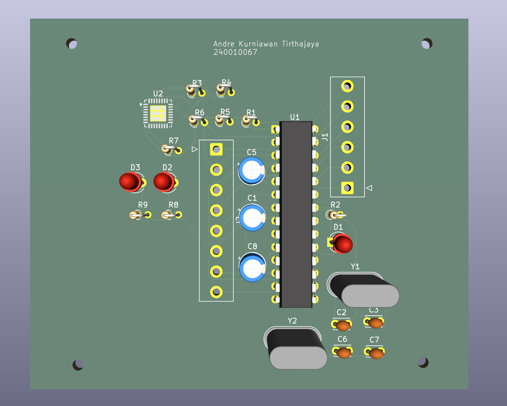

02 / PROJECTS
Project yang pernah dikerjakan selama proses belajar. Klik project untuk melihat deskripsi lengkapnya.

Click a project card to view its background, objective, contribution, learning, and result.